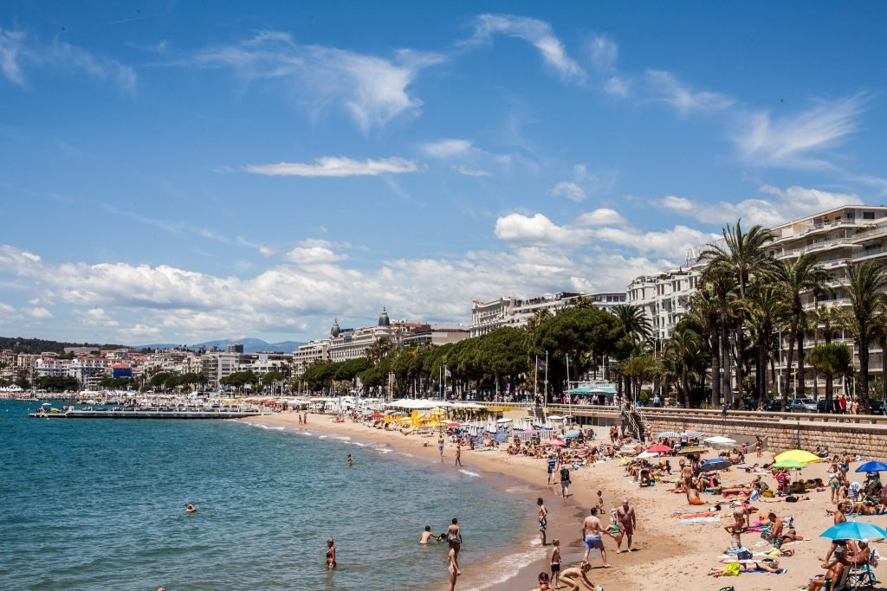

CANNES BEACH
Plage de la Croisette
La plage du Palais du Festival et celle de la Croisette sont les plages les plus centrales. La pente douce est idéale pour nager et s'amuser dans l'eau. La proximité du centre-ville est aussi un plus, avec de nombreux magasins et restaurants à proximité. Ce sont les plages les plus courues, avec une vue imprenable de la vieille ville.
Bijou Plage
Pour les familles avec des enfants, nous vous recommandons Bijou Plage, située après le Port Pierre Canto et vers la Plage des Palmiers. C'est une petite plage avec des eaux claires et peu profondes, idéales pour la baignade. A l'abri du vent, il y a rarement des vagues. L'environnement est agréable, avec les îles de Lérins en face.
Plage Palmiers
Tout au long de l'été, cette belle plage propose diverses activités nautiques. Des kilomètres de sable doré et de l'eau claire font d'elle l'une de nos plages préférées. Elle’est aussi un endroit idéal pour le surf et le kitesurf, et quand le vent se lève, le ciel est rempli de cerfs-volants de toutes les couleurs.
Pavillon Bleu
La baignade est surveillée en pleine saison par les maîtres nageurs-sauveteurs, une solution indispensable pour apporter plus de sécurité et de sérénité aux familles. Pendant que les petits s’amusent au bord de l’eau, les grands pourront nager jusqu’aux jeux et radeaux installés au large de l’eau.